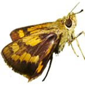

ผีเสื้อกลางวัน - “ดอกไม้บินได้”
ฉันชื่อ “น้องโพลี” ค่ะ เป็นผีเสื้อชนิดหนึ่ง (แต่ขณะนี้ฉันยังคงเป็นเพียงตัวหนอน อีกไม่นานก็จะได้กลายเป็นผีเสื้อแล้ว) พบกับฉันได้ในสวนพฤกษศาสตร์สมเด็จพระนางเจ้าสิริกิติ์ ฉันได้รับเลือกให้เป็นมัคคุเทศน์ของคุณ วันนี้ฉันไม่เพียงแต่จะแนะนำคุณให้ได้รู้จักกับเพื่อน ๆ ทุกคนของฉันเท่านั้น แต่จะขอนำเสนอ เว็บไซท์ หน้าที่ได้มีการออกแบบใหม่ของ www.qsbginsects.org ด้วย ออกจะหนักไปทางสีดำนะคะ แต่ฉันคิดว่าเข้ากันได้ดีกับตาของฉันเลย
ในขณะที่คนที่นี่เรียกฉันว่า “น้องโพลี” นักวิทยาศาสตร์เรียกฉันว่า Polyura athamas และบางคนเรียกฉันว่า “หนอนแก้วหัวมังกร” เพราะดูที่หัวฉันสิ เจ๋งจริงๆใช่มั้ย!
ขออารัมภบทสักนิดนะคะ
นักแต่งกวีชาวฝรั่งเศส ขื่อ Ponce Denis Ecouchard Lebrun บรรยายตัวฉันและเพื่อน ๆ ผีเสื้อของฉันว่า เป็น “ดอกไม้บินได้” ที่นี่เป็นสวนพฤกษศาสตร์ที่มี “ดอกไม้ที่ถูกตรึงไว้กับพื้น” มากมาย แต่ฉันกำลังจะเล่าเรื่องราวที่เกี่ยวกับตัวฉัน และเพื่อนๆ ของฉันที่บินได้ให้คุณได้ทราบก่อนค่ะ
ผีเสื้อมักจะได้รับความชื่นชมในเรื่องของความสวยงาม ความบอบบาง และความสง่างาม แต่เรื่องที่เกี่ยวกับเรามีมากกว่านั้นอีกนะ ผีเสื้อ เป็นเพียงแมลงกลุ่มเล็ก ๆ กลุ่มหนึ่งในหมู่แมลงที่มีแต่ความมหัศจรรย์ แมลงหลายจำพวกมีประวัติชีวิต และพฤติกรรม ที่น่าตื่นตาตื่นใจ นอกเหนือไปจากความงามของพวกเขา หนึ่งในสิ่งที่มหัศจรรย์ที่สุดเกี่ยวกับผีเสื้อที่เชื่อว่าทุกคนสามารถเห็นได้ คือวงจรชีวิตของพวกเรา และสิ่งสำคัญที่สุดที่คุณควรรู้คือ ฉันสามารถเปลี่ยนรูปร่างจากที่เห็นในปัจจุบัน เป็นผีเสื้อ และบินเข้ารวมกลุ่มกับเพื่อน ๆ ที่เป็นดอกไม้ที่บินได้อยู่ก่อนแล้ว ผีเสื้อและแมลงอื่น ๆ อีกมากมายมีวงจรชีวิตที่น่าทึ่งที่เปลี่ยนจากไข่ (Egg) ธรรมดาๆ ไปเป็นหนอน (Larva) ที่เปรียบได้กับเครื่องจักรที่กินอาหารได้ก่อนที่จะเปลี่ยนเป็นดักแด้อาศัยอยู่ภายในกะเปาะ (Chrysalis) และเปลี่ยนแปลงอย่างสมบูรณ์แบบอีกครั้ง เพื่อเป็นผีเสื้อ (Adult) - ซึ่งไม่มีรูปลักษณ์อะไรที่จะบอกได้เลยว่าเมื่อไม่กี่วันก่อนหน้านั้น เคยมีลักษณะเป็นตัวหนอนมาก่อน
ดูภาพวงจรชีวิตของ ตัวเต็มวัยและน้องโพลีที่ ด้านบนค่ะ
เชิญพบกับเพื่อนๆ ของฉันได้แล้วค่ะ
ผีเสื้อธรรมดาๆ บางชนิดที่คุณมักพบเห็นได้บ่อยในสวนพฤกษศาสตร์ฯ นี้ ได้แก่ ผีเสื้อหนอนกาฝาก (Delias) ผีเสื้อเณร (Eurema) และ ผีเสื้อถุงทอง (Troides) แผ่นพับฉบับเล็ก ๆ ที่จะช่วยให้คุณรู้จักสายพันธุ์ผีเสื้อที่ฉันได้แนะนำเหล่านี้คือ “ผีเสื้อของสวนพฤกษศาสตร์สมเด็จพระนางเจ้าสิริกิติ์” ซึ่งรวมภาพผีเสื้อ 30 ชนิดที่พบในสวนนี้ค่ะ
ในขณะที่คุณอยู่ในสวนพฤกษศาสตร์ฯ คุณอาจพบกับเพื่อนบางคนของฉันจาก “ด้านมืด” หมายถึงผีเสื้อกลางคืนยังไงเล่า! ที่จริงพวกเขาไม่ได้ “มืด” อย่างที่คิดหรอก เพียงแต่พวกเขามักชอบที่จะบินในเวลากลางคืนมากกว่า ภาพที่อยู่ด้านล่างอาจเป็นตัวช่วยให้คุณบอกได้ว่าตัวไหนเป็นผีเสื้อกลางวันและตัวไหนเป็นเป็นผีเสื้อกลางคืน
ลองมาดูซิว่า เราจะได้เห็นอะไรในสวนบ้าง
 ในขณะที่คุณชื่นชมความงามของฉันและเพื่อน ๆ คุณยังมีโอกาสที่จะเห็นว่าเราสามารถทำอะไรที่น่าสนใจในสภาพแวดล้อมทางธรรมชาติรอบๆ ตัวเราได้อีกมากมาย เช่นการบินโลดแล่นไปมา จากดอกไม้ดอกหนึ่ง ไปยังอีกดอกหนึ่ง ดื่มนำ้จากลำธาร การผสมพันธุ์ การวางไข่ หรืออาจจะเป็นการเขมือบใบไม้กินอย่างเอร็ดอร่อย ในช่วงที่เป็นตัวหนอน
ในขณะที่คุณชื่นชมความงามของฉันและเพื่อน ๆ คุณยังมีโอกาสที่จะเห็นว่าเราสามารถทำอะไรที่น่าสนใจในสภาพแวดล้อมทางธรรมชาติรอบๆ ตัวเราได้อีกมากมาย เช่นการบินโลดแล่นไปมา จากดอกไม้ดอกหนึ่ง ไปยังอีกดอกหนึ่ง ดื่มนำ้จากลำธาร การผสมพันธุ์ การวางไข่ หรืออาจจะเป็นการเขมือบใบไม้กินอย่างเอร็ดอร่อย ในช่วงที่เป็นตัวหนอน
ความหลากหลายและกิจกรรมของพวกเราถือเป็นส่วนสำคัญของระบบนิเวศที่มีสถานภาพดี หนึ่งในกิจกรรมที่สำคัญที่สุดที่เราทำ ในสวนพฤกษศาสตร์ฯ คือการผสมเกสรให้กับพืช (โดยเฉพาะอย่างยิ่งดอกไม้สีแดง สีเหลือง หรือดอกไม้ที่มีดอกยาว เหมาะมากกับปากที่ยาวมากของพวกเรา) เป็นที่แน่นอนว่า พวกเราคือส่วนที่สำคัญส่วนหนึ่งของการท่องเที่ยวเชิงนิเวศด้วย!
อนุญาตให้ถ่ายภาพได้เท่านั้นนะคะ
สวนพฤกษศาสตร์ฯ นี้ เป็นส่วนหนึ่งของอุทยานแห่งชาติดอยปุยสุเทพ ดังนั้นผีเสื้อและสิ่งมีชีวิตอื่น ๆ จึงได้รับความคุ้มครอง โปรดอย่าทำอะไรมากไปกว่าการถ่ายภาพ (พวกเราถ่ายรูปขึ้นมากค่ะ!) เวลาที่ดีที่สุดที่จะเห็นและถ่ายภาพผีเสื้อคือในช่วงฤดูแล้งโดยเฉพาะในเดือนมกราคม กุมภาพันธ์ และมีนาคม ในช่วงนี้ผีเสื้อหลายชนิดจะชอบมารวมตัวกันรอบลำธารภายในสวน (ดูแผนที่) ในช่วงฤดูฝนโอกาสที่ดีที่สุดมักจะอยู่รอบๆ บริเวณเรือนกระจก เป็นผีเสื้อที่บินมาตอมไม้ดอกที่ปลูกในพื้นที่นี้

Nong Poly
พบกันอีกครั้งค่ะ พบฉันได้ที่บริเวณ สนามหญ้าที่เรือนกระจกนะคะ
Catopsilia pomona
พบทั่วไปในสวน เช่น บริเวณสวนดอกไม้ หน้าเรือนกระจก บินได้ว่องไว
Troides helena


เป็นผีเสื้อขนาดค่อนข้างใหญ่ ชอบบินสูง อาจพบตอมดอกไม้ที่บริเวณเรือนกระจก
Zemeros flegyas

เป็นผีเสื้อขนาดเล็ก ชอบอยู่กลางแสงแดด เวลาเกาะปีกจะตั้งมุมกับลำตัวแปลกไปจากผีเสื้อชนิดอื่น
Potanthus mingo
อยู่ในกลุ่มที่ได้ชื่อว่า "ผีเสื้อบินเร็ว" ชอบโผบินสั้นๆ จากที่หนึ่งไปอีกที่หนึ่ง มักพบอยู่ใกล้ลำธารบริเวณทางเข้าสวน
Cheritra freja

พบตัวได้ค่อนข้างยาก ชอบเกาะอยู่ใต้ใบของไม้พุ่ม หรือไม้ใหญ่

เชิญดูรายชื่อทั้งหมดของผีเสื้อกลางวันที่พบในสวนได้ที่นี่ค่ะ “คลิก”
ข้อมูลเพิ่มเติม
ในขณะนี้ สวนพฤกษศาสตร์ฯ มีแผ่นพับที่มีข้อมูลเกี่ยวกับผีเสื้อกลางวัน อยู่ 2 ฉบับคือ
1. “ผีเสื้อ - ดอกไม้บินได้ในสวนพฤกษศาสตร์”: เนื้อหา เป็นการแนะนำทั่วๆ ไป เกี่ยวกับผีเสื้อในสวนพฤกษศาสตร์ มี 2 ภาษา (อังกฤษ/ไทย)
2. “ผีเสื้อในสวนพฤกษ์”: มีภาพของผีเสื้อที่พบบ่อยบางส่วนในสวนพฤกษศาสตร์ฯ มี 2 ภาษา (อังกฤษ/ไทย)
ติดต่อเราได้ที่:
ส่วนพิพิธภัณฑ์แมลงของสวนพฤกษศาสตร์สมเด็จพระนางเจ้าสิริกิต์
ตู้ไปรษณีย์ 7 แม่ริม,
เชียงใหม่ 50180
ประเทศไทย โทร: + 66-53-841243; แฟกซ์: + 66-53-841242
อีเมล: entomology@qsbg.org
www.qsbginsects.org
เรายินดีที่จะให้ข้อมูลเพิ่มเติมในเรื่องวิชาการเสมอ
เอื้อเฟื้อภาพ: ขอขอบคุณผู้ที่มีรายชื่อต่อไปนี้ที่อนุญาตให้ใช้ภาพ: RJ Cunningham ไกรสร ไทยแสนทา Burkhard Hinnersmann ex Wikimedia CC-BY-SA-3.0, Anaxibia, L. Shyamal CC-BY-2.5, William Atkinson (PD)